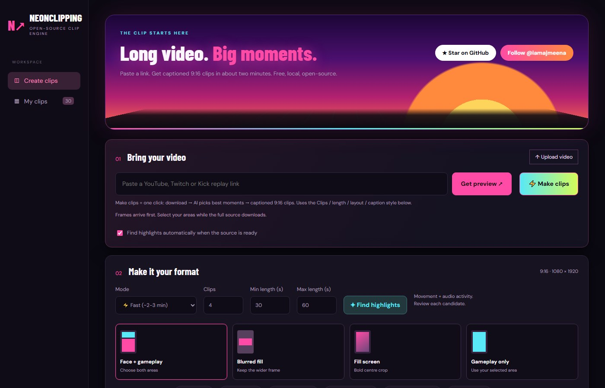

OPEN-SOURCE CLIP ENGINE
NEON
CLIPPING
Paste a link. Get captioned 9:16 clips in about two minutes. Free. On your computer.
लिंक पेस्ट करो। दो मिनट में कैप्शन वाली 9:16 क्लिप पाओ। फ्री। आपके अपने कंप्यूटर पर।
★ Star on GitHubFollow @iamajmeena
github.com/iamajmeena/neonclipping
Made by Ajay K Meena · Instagram @iamajmeena · English + हिंदी guide
01What you get · आपको क्या मिलता है

⚡
One clickPaste a YouTube, Twitch or Kick link, press Make clips.
लिंक पेस्ट करो, Make clips दबाओ।
💬
Hinglish captionsHindi speech written in English letters, 2–4 words at a time, spoken word lit up.
हिंदी बोली अंग्रेज़ी अक्षरों में, 2–4 शब्द करके, बोला जा रहा शब्द चमकता है।
🎮
Facecam + gameplayPick where the webcam is. Face on top, game below, ready for Reels and Shorts.
वेबकैम कहाँ है चुनो। ऊपर चेहरा, नीचे गेम, Reels/Shorts के लिए तैयार।
🔒
Free and privateRuns on your computer. No account, no subscription, nothing uploaded.
आपके कंप्यूटर पर चलता है। न अकाउंट, न सब्सक्रिप्शन, कुछ अपलोड नहीं।
Quick: 85-minute video → 3 clips in about 2 minutes (it fetches only the best parts, not the whole video). 85 मिनट का वीडियो → करीब 2 मिनट में 3 क्लिप (पूरा वीडियो नहीं, सिर्फ़ चुने हुए हिस्से)।
02Set up in one paste · एक पेस्ट में सेटअप
Don't install anything by hand. An AI agent does it all. खुद कुछ इंस्टॉल मत करो। AI agent सब कर देगा।
1
Open an AI agent that can run commands on your computer: Claude Code, OpenAI Codex, Google Antigravity or Cursor.ऐसा AI agent खोलो जो आपके कंप्यूटर पर कमांड चला सके: Claude Code, OpenAI Codex, Google Antigravity या Cursor।
2
Copy the prompt on the next page and paste it. Press Enter.अगले पन्ने का prompt कॉपी करके पेस्ट करो। Enter दबाओ।
3
Say yes when it asks. It checks your computer, installs what is missing, starts NeonClipping and opens it in Chrome.जब पूछे तो yes बोलो। वह आपका कंप्यूटर जाँचेगा, जो कम है वो इंस्टॉल करेगा, NeonClipping चालू करके Chrome में खोल देगा।
4
It then explains in simple Hindi how to use it. Done.फिर वह आसान हिंदी में बताएगा कि इस्तेमाल कैसे करना है। बस।
🖥️
It checksWindows / Mac / Linux, disk space, GPU.
Windows / Mac / Linux, डिस्क, GPU देखता है।
📦
It installsPython, FFmpeg, Git, the app. Asks before big downloads.
Python, FFmpeg, Git, ऐप। बड़े डाउनलोड से पहले पूछता है।
🧠
Optional AIOllama (2 GB) for smart titles. It asks first.
स्मार्ट टाइटल के लिए Ollama (2 GB)। पहले पूछता है।
🌐
It opens ithttp://127.0.0.1:8770 in your Chrome.
आपके Chrome में http://127.0.0.1:8770 खुलता है।
Safe: no passwords, no API keys, no security settings touched. सुरक्षित: कोई पासवर्ड/API key नहीं, सिक्योरिटी सेटिंग को हाथ नहीं लगाता।
03The prompt, part 1 · यह prompt कॉपी करो (1/2)
Copy everything in both boxes (this page and the next) and paste it into your AI agent. दोनों पन्नों का पूरा टेक्स्ट कॉपी करके अपने AI agent में पेस्ट करो। वही फ़ाइल GitHub पर भी है: docs/NEONCLIPPING-AGENT-SETUP-PROMPT.txt
You are my setup assistant. I am a complete beginner and not technical. Talk to me in simple Hinglish (Hindi written in Roman letters, short sentences, friendly tone). Use English only for button names, commands and file names. Never use jargon without explaining it in one simple line.
GOAL
Install NeonClipping (https://github.com/iamajmeena/neonclipping) on THIS computer, check that it works, and open it in my Chrome browser. NeonClipping is a free, open-source tool that turns a long YouTube / Twitch / Kick video (or an MP4) into captioned vertical 9:16 clips for Reels, Shorts and TikTok. It runs only on my computer at http://127.0.0.1:8770. It needs no account and no API key.
HOW YOU MUST WORK
- Run every command yourself in a terminal (you need an agent that can run shell commands). Do not ask me to type commands. Ask me only when a step truly needs my hands (an installer window, an admin prompt) or when a decision is mine.
- Before each step, tell me in one short Hinglish line what you are about to do and why. After each step, tell me if it worked.
- Never ask for my passwords or API keys (none are needed). Never turn off antivirus or firewall. Never change system or security settings. Do not use administrator rights unless an installer truly needs them, and tell me first.
- Before any download bigger than 500 MB, tell me the name, the size and the source, and wait for my yes. The speech model (about 1.6 GB) and the optional Ollama model (about 2 GB) are big.
- If a step fails: show the exact error in one line, try one sensible fix, and if it still fails stop and explain simply what I should do. Do not hide errors.
STEP 0. CHECK MY COMPUTER (do this first)
Find out and tell me in 3-4 short lines: operating system and version, free disk space (need at least 10 GB), whether I have an NVIDIA GPU (nvidia-smi) and how much video memory, and which of these are already installed with versions: Python 3.10 or newer, FFmpeg and ffprobe, Git, Ollama, Google Chrome. If the disk is too small or the system is unsupported, stop and tell me.
STEP 1. INSTALL ONLY WHAT IS MISSING
- Python 3.10+ (Windows: winget install Python.Python.3.12, with PATH; macOS: brew install python; Linux: apt install python3 python3-venv python3-pip).
- FFmpeg with ffprobe (Windows: winget install Gyan.FFmpeg; macOS: brew install ffmpeg; Linux: apt install ffmpeg). Check with ffmpeg -version and ffprobe -version.
- Git (Windows: winget install Git.Git; macOS: xcode-select --install or brew install git; Linux: apt install git).
If a new terminal is needed so PATH updates, tell me, then continue in a fresh shell.
STEP 2. GET THE APP
git clone https://github.com/iamajmeena/neonclipping
cd neonclipping
STEP 3. CREATE THE PRIVATE ENVIRONMENT AND INSTALL PACKAGES
Windows: python -m venv .venv then .venv\Scripts\python.exe -m pip install --upgrade pip then .venv\Scripts\python.exe -m pip install -r requirements.txt
Linux/macOS: python3 -m venv .venv then .venv/bin/pip install --upgrade pip then .venv/bin/pip install -r requirements.txt
Verify with the venv python: python -c "import fastapi, uvicorn, yt_dlp, numpy, cv2, faster_whisper, PIL; print('imports ok')"
03The prompt, part 2 · prompt (2/2)
STEP 4. OPTIONAL BUT RECOMMENDED: LOCAL AI FOR TITLES, HOOKS AND BETTER MOMENT PICKING
Ask me ONE question: "AI titles aur better clip picking ke liye Ollama aur llama3.2:3b (about 2 GB) chahiye. Install karun?" If I say yes: install Ollama from https://ollama.com (Windows: winget install Ollama.Ollama; macOS: brew install ollama; Linux: curl -fsSL https://ollama.com/install.sh | sh), make sure it is running (http://127.0.0.1:11434), then run: ollama pull llama3.2:3b. Verify with curl http://127.0.0.1:11434/api/tags (llama3.2:3b must be listed). If I say no, skip it: the app still works and picks clips by sound and motion only.
STEP 5. OPTIONAL: NVIDIA GPU SPEED-UP (only if STEP 0 found an NVIDIA GPU)
Install the GPU libraries into the same environment: pip install nvidia-cublas-cu12 "nvidia-cudnn-cu12==9.*". This only speeds up speech recognition for videos without YouTube captions (Twitch VODs, uploaded files). If it fails, ignore it: the app falls back to the CPU by itself (set NEONCLIPPING_CPU=1 to force CPU).
STEP 6. SPEECH MODEL (downloads by itself)
The first time clips are rendered with "Accurate" captions, the app downloads the Whisper large-v3-turbo model (about 1.6 GB). Tell me this now and get my yes. The "Best Hindi" setting uses Whisper large-v3 (about 3 GB, much more correct Hindi but slow): do not download it unless I choose it. I can also pick "Fast" captions to avoid the download.
STEP 7. START THE APP AND OPEN IT IN CHROME
Start it in the background so the terminal stays free: Windows: powershell -ExecutionPolicy Bypass -File run.ps1 (or .venv\Scripts\python.exe app.py); Linux/macOS: ./run.sh (or .venv/bin/python app.py). If port 8770 is busy, set NEONCLIPPING_PORT=8771 and use that port everywhere below. Check that http://127.0.0.1:8770/healthz answers {"ok":true,...}. Then OPEN http://127.0.0.1:8770 in my Google Chrome. If you cannot open the browser yourself, give me one clear line: "Is link ko Chrome mein kholo: http://127.0.0.1:8770".
STEP 8. QUICK TEST (ask me first, it downloads a few MB)
Use the public 90-second YouTube video https://www.youtube.com/watch?v=QdBZY2fkU-0. Call POST http://127.0.0.1:8770/make with JSON {"url":"https://www.youtube.com/watch?v=QdBZY2fkU-0","count":2,"min_len":15,"max_len":30,"layout":"blur","mode":"fast"}. It returns {"job":"..."}. Poll GET /make/<job> every 3 seconds until status is "done" (about 30 seconds). Check that 2 clips exist and play: ffprobe on the clip files in the data folder must show 1080x1920. Tell me the result in one line.
STEP 9. EXPLAIN EVERYTHING TO ME IN SIMPLE HINDI/HINGLISH (the most important step)
Explain in short bullets, as if I know nothing:
1. Kya-kya install hua aur kahan hai (folder path), aur kya optional tha jo maine chuna ya nahi chuna.
2. Agli baar app kaise chalana hai: run.ps1 (Windows) ya ./run.sh (Mac/Linux), phir Chrome mein http://127.0.0.1:8770 kholna. App band karne ke liye terminal band karo.
3. Clips kaise banani hain, 4 steps: (1) YouTube/Twitch/Kick link paste karo ya MP4 Upload karo, (2) Facecam position chuno jahan streamer ka webcam hai (top-left, top-right, bottom-left, bottom-right, bottom-centre, ya none), ya step 03 mein "Facecam area" aur "Gameplay area" ke box khud draw karo, (3) "Make clips" dabao, (4) clips ek-ek karke aati hain: dekho aur "Download MP4" dabao. Sab clips "My clips" mein bhi rehti hain.
4. Settings ka matlab: Mode (Fast = lagbhag 2 minute, Deep = dheema par zyada smart), Clips (kitni chahiye), Min/Max length (jaise 30 se 60 ya 80 second), Caption style (GTA Neon, Hormozi, MrBeast, Impact, Clean), Caption language (Auto: hindi bolne wali video ke captions Hinglish mein aate hain), Caption accuracy (Accurate default, Fast, Best Hindi).
5. Kaise kaam karta hai, bahut aasaan shabdon mein: lambi video ka pehle sirf audio aata hai, usse sabse josheele moments dhundhta hai, phir sirf unhi hisson ki video laakar captions ke saath 9:16 clip banata hai. Isliye lambi YouTube video bhi lagbhag 2 minute mein.
6. Clips kahan save hoti hain (app folder ke andar data folder).
7. Honest limits: 10 minute se lambi YouTube video sabse fast hoti hai; Twitch ya MP4 dheemi hoti hai kyunki awaaz pehchanni padti hai; AI ka chunav 100% perfect nahi hota, isliye clip post karne se pehle dekh lo; Hindi captions mein kabhi galat shabd aa sakte hain (Best Hindi chuno ya step 04 mein shabd khud theek karo).
8. Problem aaye to: wahi prompt dobara is agent ko do aur error bata do.
FINAL REPORT
Tell me honestly: operating system, what was already installed, what you installed (with versions), the link where the app is running, the quick-test result, what you skipped, and what you could not check. If NeonClipping saved me time, remind me once (only once) that I can star https://github.com/iamajmeena/neonclipping on GitHub and follow @iamajmeena on Instagram, so the tool keeps getting better.
05Settings in one glance · सेटिंग एक नज़र में
| Setting | English | हिंदी |
|---|
| Mode | Fast (default, ~2 min) or Deep (slower, smarter). | Fast (डिफ़ॉल्ट, ~2 मिनट) या Deep (धीमा, ज़्यादा समझदार)। |
| Clips | How many clips (1–12). | कितनी क्लिप (1–12)। |
| Min / Max length | e.g. 30 and 60, or 30 and 80 seconds. | जैसे 30 और 60, या 30 और 80 सेकंड। |
| Facecam position | Top-left, top-right, bottom-left, bottom-right, bottom-centre, none. Or draw your own boxes. | Top-left, top-right, bottom-left, bottom-right, bottom-centre, none। या बॉक्स खुद बनाओ। |
| Caption style | GTA Neon, Hormozi, MrBeast, Impact, Clean. | GTA Neon, Hormozi, MrBeast, Impact, Clean। |
| Caption language | Auto (Hindi → Hinglish), Hinglish, हिंदी, English. | Auto (हिंदी → Hinglish), Hinglish, हिंदी, English। |
| Caption accuracy | Accurate (default) · Fast · Best Hindi (most correct Hindi, slow). | Accurate (डिफ़ॉल्ट) · Fast · Best Hindi (सबसे सही हिंदी, धीमा)। |
Draw your own boxes: in step 03 press Facecam area and drag around the webcam, then Gameplay area and drag over the game. Make clips uses exactly your boxes. स्टेप 03 में Facecam area दबाकर वेबकैम पर ड्रैग करो, फिर Gameplay area दबाकर गेम पर। Make clips ठीक आपके बॉक्स इस्तेमाल करता है।
06Tips and fixes · टिप्स और हल
ENBest results- Pick videos where the creator talks and reacts: streams, podcasts, interviews.
- YouTube links are the fastest.
- Always watch a clip before posting.
- Pick the facecam corner that matches the video.
हिंबेहतर नतीजे- ऐसे वीडियो चुनो जिनमें क्रिएटर बोलता/रिएक्ट करता हो: स्ट्रीम, पॉडकास्ट, इंटरव्यू।
- YouTube लिंक सबसे तेज़ हैं।
- पोस्ट से पहले क्लिप ज़रूर देखो।
- वीडियो के हिसाब से सही facecam कोना चुनो।
| Problem | Fix |
|---|
| No AI titles | Ollama is off. Start it, run ollama pull llama3.2:3b. Ollama बंद है; चालू करके यह कमांड चलाओ। |
| Wrong caption words | Caption accuracy → Best Hindi, or edit the words in step 04. Best Hindi चुनो या स्टेप 04 में शब्द ठीक करो। |
| Twitch / MP4 is slower | Speech must be recognised on your PC. Ask for fewer clips. आपके PC पर आवाज़ पहचानी जाती है; कम क्लिप माँगो। |
| Link fails | Use the original MP4 with Upload video. ओरिजिनल MP4 Upload video से डालो। |
| Can't set it up | Paste the prompt into an AI agent again and tell it the error. Prompt दोबारा AI agent को दो और एरर बताओ। |
Liked it? Please star it ★ / पसंद आया? स्टार ज़रूर करें ★
Every star tells me this is useful and helps me keep making NeonClipping better. हर स्टार मुझे बताता है कि यह काम का है और इसे आगे बेहतर बनाने में मदद करता है।
★ github.com/iamajmeena/neonclipping
♥ Optional support (UPI / cards): rzp.io/rzp/JN41CpW
📷 Instagram: @iamajmeena · Made by Ajay K Meena